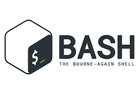
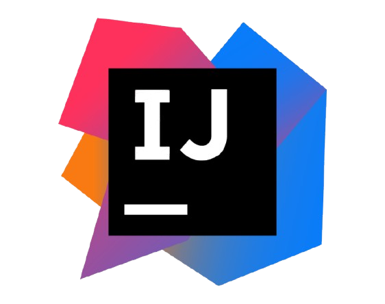

I am currently studying Computer Programming and Information Systems at Farmingdale State College. Specifically, I am working on enriching my practical programming and technical skills as it relates to troubleshooting. My main interests include software development, networking and security, and Unix/Linux-based systems.
Through doing assigned work and extracurricular research, I enjoy learning how different systems interact, from writing code, to the intricate details of how applications run on operating systems, how networks are used to efficiently encapsulate and transmit data, and how operating systems themselves work.
This website validates my progress on my learning journey, and highlights projects and resources that have helped me grow as a developer.



